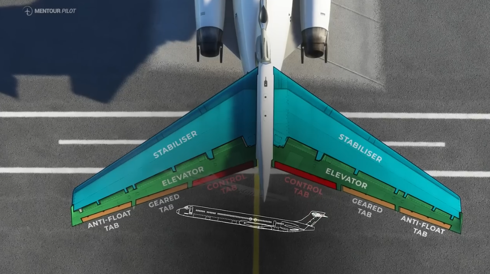
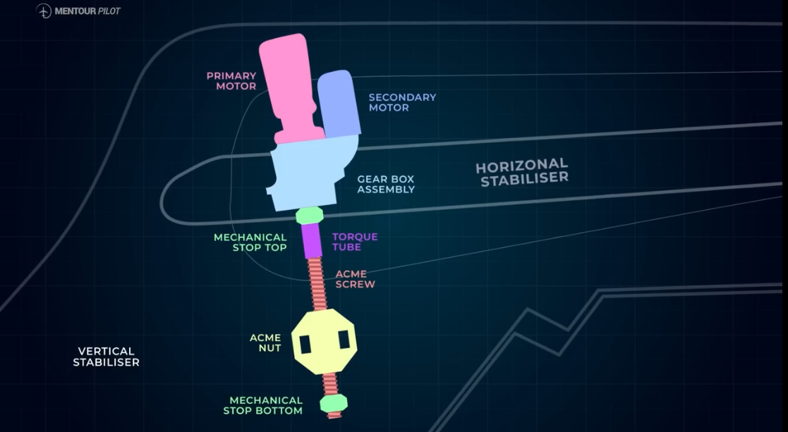
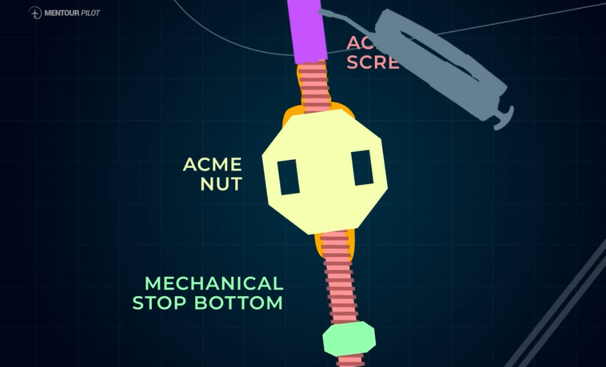
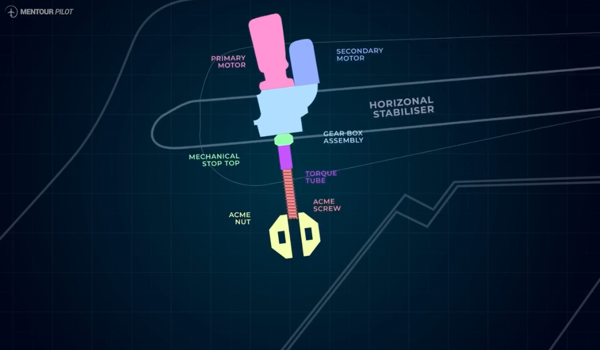

The tragic story of Alaska Airlines flight 261
Background
As a pilot there are a few situations you hope you will never have to experience and one of them is a total loss of aircraft controls without any checklist to solve it. This is particularly what happened to Alaska Airlines flight 261 on the 31st of January 2000. The accident aircraft was a Macdonnell Douglas(MD)-83 and the part that becomes crucial in this story is the empennage that is the rear most wing consisting of the vertical stabilizer (controls the yaw) and the horizontal stabilizer (controls the pitch).  The way that the horizontal stabilizer works is that when any of the two motors are activated, they start to rotate the acme screw traversing through the acme nut. This means that as the acme screw rotates in either direction, it lowers or raises the angle of the horizontal stabilizer. 
The Culprit
This assembly needs lubrication on regular intervals and Alaska Airlines had it set for after every 8 months. According to Boeing, the wear checks on the other hand were to be done after every 30 months or 7,200 hours whichever came first but as per the Alaska Airlines manual, it had been set for after every 30 months without any hourly limit. With the busy flying schedule they operating in at the time, it meant that this would take 9,500 hours between the checks and the accident aircraft was coming up to the end of those 30 months.
The Crew
On that fateful day, upon landing in Licenciado Gustavo Diaz Ordaz International Airport in Mexico, the aircraft had just successfully completed another flight and the inbound crew had experienced a normal flight. The outbound crew consisted of 3 flight attendants who were getting things in order for the 83 passengers and 2 very senior pilots. They were bound for Seattle with a short stop over in San Fransisco. When everyone was boarded and everything set, take off clearance was granted and the aircraft took off at a time 1337 Hrs and started climbing to its planned cruising altitude of 31,000 feet.
The MD-83 is a variation of the original DC-9 which was in production until 1982, followed then by MD-81, MD-82, MD-83, MD-88 and finally Boeing 717. Even though the later types carried many upgrades, the core design and systems could be traced back to the original DC-9.
The Genesis
During climb, trim issues were encountered and they contacted ground operations at Alaska Airlines even requesting the assistance of any present instructor pilot to suggest anything they might have missed but to no avail. The pilot then suggested a divert to Los Angeles International Airport as he didn't want to pass any suitable airport with the type of problem he was experiencing. This seemed to annoy operations on ground citing delays and issues in acquiring landing clearance for an unscheduled flight into L.A. Speaking to a ground Engineer, the captain reported that the AC meters showed a big increase in electrical load meaning that the motors were working but unsuccessful in turning the acme screw, this probably meant it was jammed. The captain then came up with an idea to unjam it by clicking it off and suddenly, a loud clog was heard at the back followed by two faint thumps. It is possible the sudden motor activation by the captain caused the acme screw to start moving again shearing off the remaining threads in the acme nut that were holding it thus allowing the screw and the stabilizer to start moving freely. This resulted in the nose pitching forward, sending the aircraft into a rapid dive and increase in speed.
Some Relieve
The speed brakes were extended and with a combined effort, the pilots managed to pull the aircraft out of the dive more or less stabilizing at 24,000 feet. Upon contacting the approach controller and explaining the nature of their problem, they were cleared for LA. The captain however knew his jet was in bad shape and therefore decided to first complete configuration tests over water than over populated land. The aircraft was cleared to descend to 17,000 feet and they reminded the controller they needed a block attitude after which they turned out to sea on heading 280. By extending the slats and flaps they managed to configure the aircraft to a fairly stable state after which they were retracted re-configuring it again. The captain planned on unloading the aircraft but the first officer didn't think it was a good idea just yet and suggested they just land. This was acknowledged by the Captain.
The Tragedy
 Unfortunately, just seconds later, the acme screw and torque tube completely fractured causing the stabilizer to exert excess loading on the tip fairing at the top ripping it off. The horizontal stabilizer angle increased to a high value that couldn't even be recorded on the flight data recorder pitching the aircraft's nose forward, again sending the Alaskan bird into a terrible dive. This was a hopeless situation but it didn't stop the captain from trying. He rolled the aircraft to the left in an inverted position, in effect counter-acting the downward pitch of the stabilizer. This reduced the pitch from -70 degrees to -29 then to -9 but the plane was still in descent and at over 200 knots. Moments later the aircraft impacted the Pacific and all 88 people on board were instantly lost.
Heroes
Several other flights in the area had witnessed Flight 261's final descent and with the additional help of radar, the crash site was quickly found. Upon recovery of debris, the NTSB discovered that the acme nut was almost smooth and the acme screw had several spiral threads ripped off. Most shocking was the discovery that neither the acme nut nor the screw had any grease on them. The conclusion of the investigative report by NTSB was that the accident was caused by a loss of airplane pitch control resulting from inflight failure of the horizontal stabilizer trim system jack screw assembly.
The two pilots were posthumously awarded the airline pilots association gold medal for heroism in recognition of their actions during the emergency.
Source: Mentour Pilot